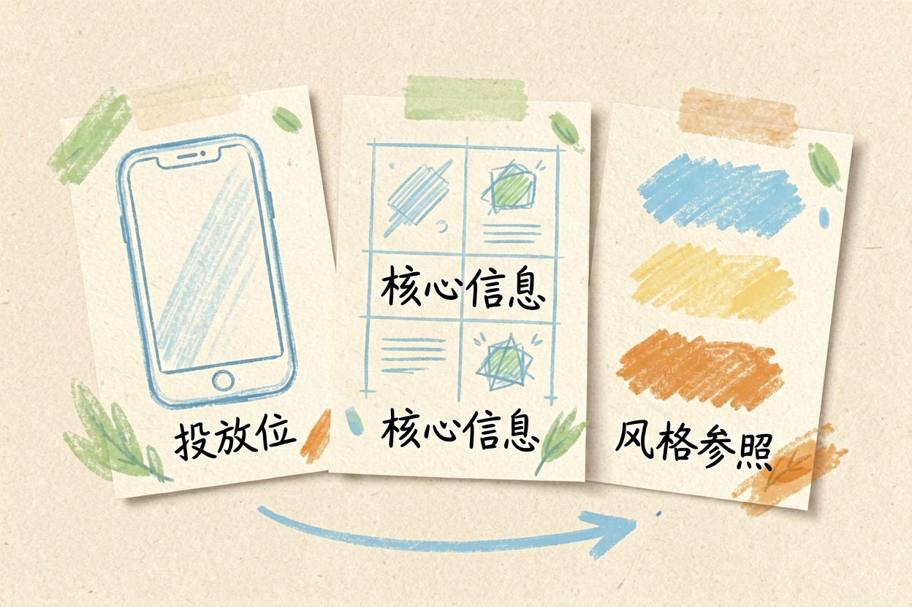
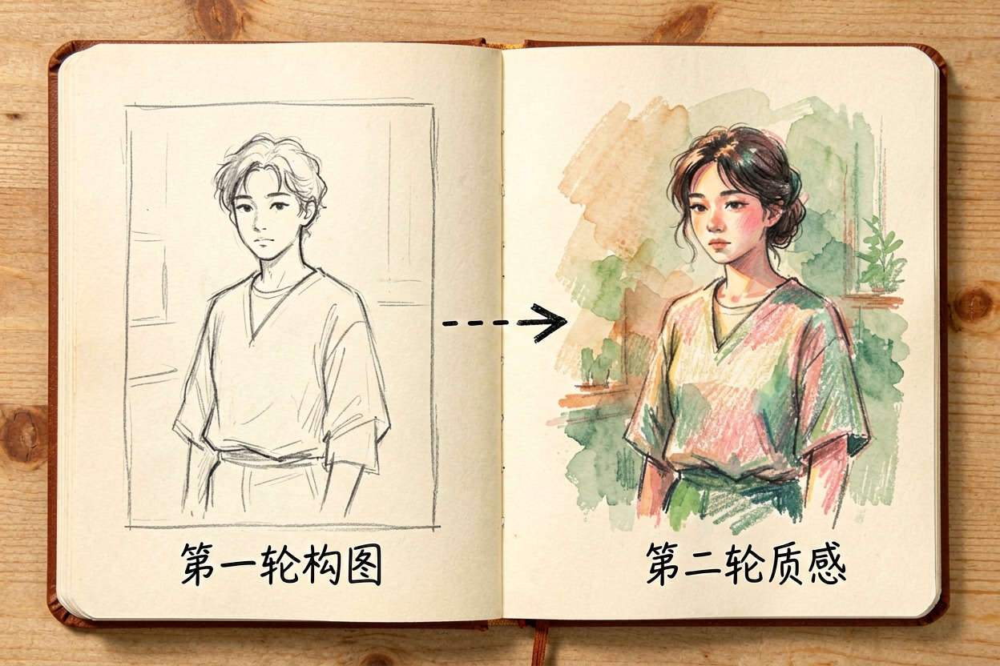
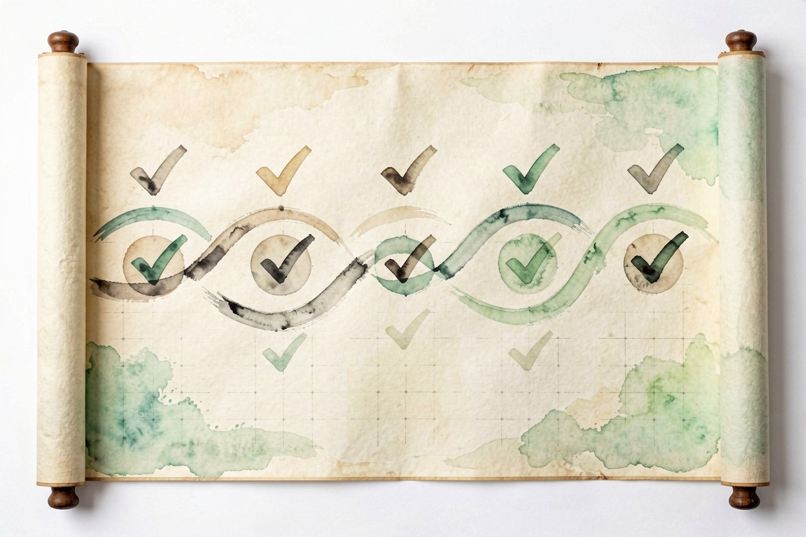

用 AI 做海报？从需求到成图的完整步骤 — Learntide
别急着让模型出图。先把海报要贴在哪、给谁看、放什么字这三件事想明白。
ai做海报：先把需求和用途写清楚

ai做海报之所以常出废片，是因为开口就喊「来张海报」。模型不知道贴在哪儿，只能按默认审美堆元素，出来多半没法直接用。
动手前先定三件事。第一，投放位置：朋友圈竖图、公众号头图、还是线下易拉宝，比例完全不同。第二，核心信息：主标题几个字，要不要留二维码和落款。第三，风格参照：给一两张你喜欢的图当样例，比写一堆形容词管用。
位置拿不准就去量。打开要投放的页面，截一屏看看别人怎么排，比凭感觉猜准得多。这一步花的几分钟，后面会省下反复改图的时间。
风格词要换成可执行的指令。别说「高级感」，改成「低饱和、大留白、细线条」。模型对具体参数比形容词敏感得多。
给模型一段能用的提示词

三件事写清楚，提示词就好写了。别只写「科技风海报」，那等于没说。
你是平面设计助手。请生成一张宣传海报的描述供图像模型使用。
画面要求：
- 主题：周末读书分享会
- 主标题：「把读过的书聊出来」
- 副信息：8 月 20 日 / 城市书房
- 风格：暖色、手绘质感、留白多
- 比例：竖版 3:4，留顶部 1/5 给标题
- 不要出现具体人名和二维码
请输出：画面构图说明 + 一段可直接粘贴的生图提示词。拿到生图提示词后，先看比例对不对。模型爱塞满画面，可实际海报要留呼吸位。这一步要你自己把比例和留白写死。
提示词要分两轮写。第一轮定主体和构图，第二轮再补质感和光影。一次塞太多要求，模型会顾此失彼，哪个都没做好。
把初稿改成能用的成品
第一版几乎一定别扭。常见问题是字太小、配色太艳、主体不突出。
改图时一次只动一处。先调字号，再调对比，最后换配色，别全一起改，否则看不出哪步生效。主体不够突出就加暗角或留白，把视线引过去。
配色别超过三种。主色、辅助色、点缀色各司其职，再多就乱。拿不准就先转成灰度看层次，能分清前后再上色。
文字和二维码要自己排
图像模型出的字经常缺笔少划。海报上的标题和日期必须自己排，用设计工具叠上去最稳。
二维码也别让模型画。它生成的是花花绿绿的假码，扫出来是空的。真二维码用专门工具生成，再贴到留好的位置。
文字层级要拉开。主标题最大，副信息小一号，落款最小。读者扫一眼就知道先看哪行，信息才传得出去。
导出尺寸与排版注意
成图后别直接发。先按投放位导出正确尺寸，朋友圈和公众号的头图比例不一样，压错就糊。
导出选 RGB 和足够像素，印刷用途再转 CMYK。文件留一份可编辑源文件，下回改字不重画。
缩略图也要测。发到群里看一眼，在手机小图上还能不能认，认不出就再调构图。
别把第一版当终稿。也别让模型替你定主标题，那是你最该自己拍板的部分。工具从工具导航里挑一个顺手的就行，ai做海报真正省下的，是从空白到第一稿那段最费神的时间。

本文信息核对于 2026-08-08。AI 产品的价格、免费额度与功能变动频繁，实际以各工具官网当前说明为准。